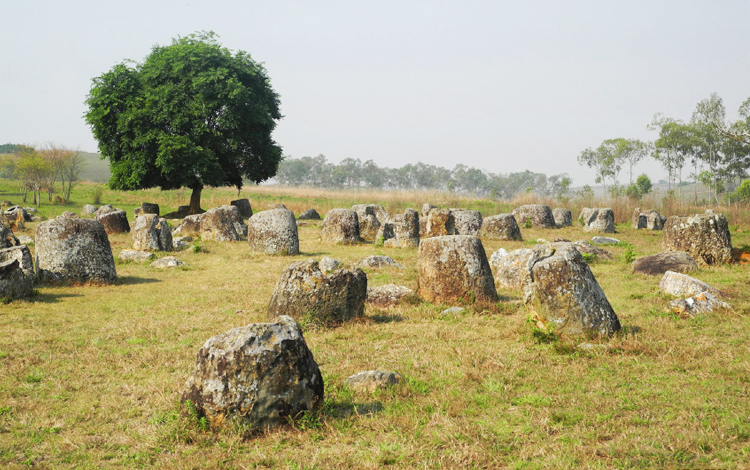

10 ที่เที่ยวในลาวที่ไม่ควรพลาด ตั้งแต่เหนือจรดใต้

1. วัดเชียงทอง, หลวงพระบาง
เริ่มกันทีวัดเชียงทองสถานที่ท่องเที่ยวที่ต้องมาเยือนเมือมาถึงหลวงพระบาง เป็นวัดที่สำคัญและสวยงามที่สุดของเมืองเล็กๆ แห่งนี้ วัดเชียงทองเป็นวัดเก่าแก่คู่บ้านคู่เมืองหลวงพระบางมาหลายร้อยปี ถูกสร้างขึ้นในรัชสมัยพระเจ้าไชยเชษฐาธิราช ภายในอุโบสถ วิหารและอาคารต่างๆ บริเวณวัด จะตกแต่งอย่างสวยงามมากด้วยลวดลายแกะสลักต่างๆ ถือเป็นหนึ่งในสุดยอดสถาปัตยกรรมลาวล้านช้าง


2. น้ำตกตาดกวางสี, หลวงพระบาง
น้ำตกหินปูน สูง 4 ชั้นหรือราว 70 เมตร น้ำตกและแอ่งน้ำสีเขียวมรกตถูกรายล้อมด้วยป่าไม้แห่งนี้ เป็นอีกหนึ่งสถานที่ท่องเที่ยวทางธรรมชาติยอดนิยมของหลวงพระบาง ใช้เวลาเดินทางเข้าสู่น้ำตกตาดกวางสีราว 45 นาที ที่นี่มีกิจกรรมให้ทำหลายอย่าง ใครอยากลงเล่นน้ำก็มีห้องเปลี่ยนเสื้อผ้าให้บริการ บริเวณด้านล่างน้ำตกมีสะพานและเส้นทางเดินชมวิวอีกด้วย

3. แม่น้ำซอง, วังเวียง
วังเวียงเป็นเมืองที่ล้อมรอบไปด้วยธรรมชาติ ทั้งภูเขาน้อยใหญ่และแม่น้ำที่ไหลผ่านเมือง มีทิวทัศน์ที่สวยงามจนได้รับฉายาว่า "กุ้ยหลินเมืองลาว" แม่น้ำสายสำคัญของเมืองนี้ก็คือแม่น้ำซอง ซึ่งเป็นหนึ่งในจุดท่องเที่ยวยอดนิยมของเมือง มีกิจกรรมทางน้ำให้ทำหลายอย่างมาก เช่น พายเรือคายัค ล่องห่วงยาง เป็นกิจกรรมที่จะทำให้เราสามารถชมวิวแม่น้ำซองได้อย่างใกล้ชิด


4. ถ้ำกองลอ, คำม่วน
ถ้ำกองลอหนึ่งในแหล่งท่องเที่ยวทางธรรมชาติที่สวยงามของลาว และยังเป็นสถานที่ท่องเที่ยวชื่อดังของคำม่วนด้วยเช่นกัน ถ้ำลอดความยาวกว่า 7 กิโลเมตรนี้มีนักท่องเที่ยวเดินทางมาเยือนไม่ขาดสายโดยเฉพาะช่วงวันหยุดคนจะเยอะเป็นพิเศษ นักท่องเที่ยวสามารถนั่งเรือรับจ้างจากปากถ้ำทะลุผ่านไปอีกฝั่งของถ้ำได้ ระหว่างทางจะมีจุดให้ได้แวะชมความสวยงามของโถงถ้ำที่มีหินงอกหินย้อย

5. ทุ่งไหหิน, เชียงขวาง
ทุ่งไหหิน อยู่ที่เมืองโพนสะหวัน แขวงเชียงขวาง เป็นแหล่งท่องเที่ยวที่ทางประวัติศาสตร์และวัฒธรรมที่สำคัญของเมือง ไหหินมากมายที่ตั้งเรียงรายอยู่บนเนินเขาส่วนใหญ่สกัดมาจากหินทราย ภายในไหบางไหพบโครงกระดูกมนุษย์ บางไหพบลูกปัดจากจีน เครื่องประดับชนเผ่า และ รูปสำริด ตอนนี้จึงยังไม่มีใครรู้ที่มาที่ไปอย่างแน่ชัดของไหหินเหล่านี้ แต่ถือเป็นสถานที่ท่องเที่ยวแห่งหนึ่งที่ไม่ควรพลาด


6. พระธาตุหลวง เวียงจันทน์
พระธาตุหลวงตั้งอยู่ทางทิศตะวันออกเฉียงเหนือของประตูชัย หากไปเที่ยวเวียงจันทน์ต้องไม่พลาดไปเยี่ยมชมพระธาตุหลวง หรืออีกชื่อว่า พระเจดีย์โลกะจุฬามณี ปูชนียสถานอันสำคัญอายุนับพันปี ที่มีคุณค่าทางประวัติศาสตร์ ศิลปะและวัฒนธรรมของลาว


7. ประตูชัย, เวียงจันทน์
ปะตูไซอีกหนึ่งแลนด์มาร์กของนครหลวงเวียงจันทน์ เป็นอนุสรณ์สถานเพื่อระลึกถึงประชาชนชาวลาวผู้เสียสละชีวิตในสงครามก่อนหน้าการปฏิวัติของพรรคคอมมิวนิสต์ ลักษณะสถาปัตยกรรมได้รับอิทธิพลของประตูชัยในปารีส ประเทศฝรั่งเศส บริเวณโดยรอบมีลานจัดการแสดงน้ำพุประกอบดนตรีและสวนปะตูไซ


8. น้ำตกคอนพะเพ็ง, จำปาสัก
น้ำตกคอนพะเพ็งเป็นน้ำตกที่มีขนาดใหญ่ที่สุดในเขตแม่น้ำโขงตอนล่าง อีกทั้งยังเป็นสถานที่ท่องเที่ยวที่สวยงามขึ้นชื่อมากแห่งหนึ่งของประเทศลาว พูดได้ว่าใครมาเที่ยวลาวใต้ต้องไปชมความยิ่งใหญ่ของน้ำตกคอนพะเพ็งสักครั้ง หากเดินไปชมวิวบริเวณศาลาไม้ที่สร้างไว้เหนือบริเวณที่กระแสน้ำไหลลงมารวมตัวกัน จะเห็นภาพน้ำตกอันยิ่งใหญ่ได้ชัดเจนที่สุด หากเห็นภาพละอองน้ำสีขาวซัดแนวโขดหินให้หลีกเลี่ยงไปเที่ยวช่วงหน้าฝน เพราะหน้าฝนจะน้ำหลากจนแทบไม่เห็นแนวโขดหินและน้ำจะเปลี่ยนเป็นสีส้มแดงอีกด้วย

9. ปราสาทวัดพู, จำปาสัก
ปราสาทวัดพูได้ขึ้นทะเบียนเป็นมรดกโลกแห่งที่สองของประเทศลาว ปราสาทหินเก่าแก่แห่งนี้เป็นโบราณสถานที่ตั้งเด่นอยู่บนเนินเขาภู ที่นี่เคยเป็นสถานที่ศักดิ์สิทธิ์และแหล่งอารยธรรมโบราณถึง 3 สมัยด้วยกัน คือ อาณาจักรเจนละ อาณาจักรขอม และสุดท้ายอาณาจักรล้านช้าง


10. แก่งหลี่ผี, จำปาสัก
แก่งหลี่ผีหรือน้ำตกหลี่ผี เป็นอีกสถานที่เที่ยวยอดฮิตในลาวใต้ น้ำตกตั้งอยู่ในเขตดอนคอนไม่ไกลจากคอนพะเพ็งมากนัก ช่วงที่เหมาะแก่การเที่ยวชมคือช่วงกันยายน - ธันวาคม เพราะจะได้เห็นภาพสายน้ำจำนวนมากไหลผ่านโขดหินลงมาจนแตกเป็นละอองสีขาวไปทั่วแก่ง